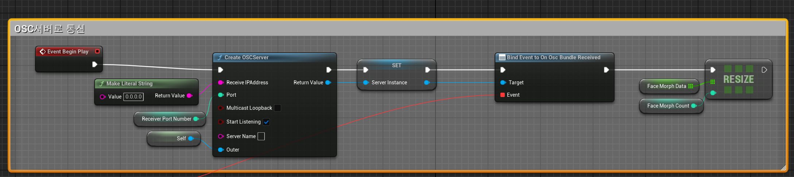

시연 영상

1. 무대 액터 배치 시스템
- 하늘(Sky) · 테마(Theme) · 지면(Floor) · 이펙트(VFX) 4가지 카테고리를 독립 조합하는 모듈형 무대 구성
- 테마 선택 시 StreamLevel 동적 로드/언로드 — 이전 레벨을 0.2초 간격 지연 타이머로 순차 언로드하여 비동기 충돌 방지
- 액터 태그(VFX · Floor · Skybox · Theme) 기반 일괄 Destroy 후 재스폰으로 깔끔한 교체 처리
SceneCaptureComponent2D+UTextureRenderTarget2D로 현재 카메라 시점 실시간 캡처하여 썸네일 생성- 서버/클라이언트 분기 처리 —
CreateDummyStage()로 클라이언트 프리뷰 동기화 제공
// 스트리밍 레벨 교체 시 이전 레벨을 지연 언로드하여 비동기 충돌 방지 float UnloadDelay = 0.4f; for (const FName& LevelName : LevelsToUnload) { GetWorld()->GetTimerManager().SetTimer(UnloadTimerHandle, [this, LevelName]() { UGameplayStatics::UnloadStreamLevel(GetWorld(), LevelName, ...); }, UnloadDelay, false); UnloadDelay += 0.2f; }
2. 버튜버 모델링 적용
- VRM4U 플러그인을 통해 VRM 형식의 버튜버 모델을 언리얼 엔진에 임포트 및 적용
- 게임 플레이 중 스켈레탈 메시를 런타임에 동적 교체하여 공연 도중 의상 및 모델 전환 구현
- Morph Target 제어를 애니메이션과 연동하여 실시간 표정 변화 반영
- Mocopi 기반 전신 모션 캡처 데이터를 UDP 소켓으로 수신하여 VRM 모델 뼈대에 적용
// 로컬 플레이어가 선택한 메시 번호를 서버 RPC로 전달 ServerRPC_ChangeMyMesh( gi->playerMeshNum ); // 서버 → 모든 클라이언트에 메시 동기화 (MulticastRPC) void UAudienceServerComponent_KMK::MultiRPC_ChangeMyMesh_Implementation( int32 num ) { auto* TargetMesh = Cast<AHSW_ThirdPersonCharacter>( GetOwner() ); if (num >= 0 && num <= 1) { // 관객 메시 교체 TargetMesh->GetMesh()->SetSkeletalMesh( audienceMesh[num] ); UMaterialInstanceDynamic* meshMat = TargetMesh->ChangeMyMeshMat( num ); TargetMesh->GetMesh()->SetMaterial( 0, meshMat ); } } // DynamicMaterial 스칼라 파라미터로 표정(Morph Target) 실시간 제어 void ADummy_KMK::SetFace( float faceValue ) { if (FaceDynamicMat) FaceDynamicMat->SetScalarParameterValue( TEXT("jswFaceChange"), faceValue ); }
3. RemoCap UDP/OSC 본 데이터 손실 초기화
- RemoCap 앱의 본(Bone) 데이터 전송 방식을 분석하여 기존 로직의 데이터 손실 원인 파악
- UDP 기반 OSC 프로토콜로 수신 구조 수정 —
FUdpSocketBuilder로 포트 바인딩 후FUdpSocketReceiver리스너 스레드 구성 - 패킷 수신 누락 시 이전 프레임 데이터를 유지하던 문제를 초기 상태 리셋 로직으로 교체하여 포즈 고착 현상 제거
- 100ms 폴링 간격 백그라운드 스레드에서 연속 수신 처리, 메인 스레드와 안전 동기화

4. 무대 설정 UI
- 날씨 · 테마 · 이펙트 · 지면 4개 카테고리 탭 — 탭 전환 시 해당 옵션 패널만 표시
- 선택된 카테고리 버튼에 Scale 1.1 렌더 트랜스폼 적용, 이전 버튼 원상 복귀로 현재 선택 상태 시각화
- Border 배열로 선택된 항목에만 SelectedBox 텍스처를 적용하는 하이라이트 시스템
WidgetSwitcher로 설정 → 캡처 확인 → 최종 확인 3단계 플로우 전환- 0.3초 지연 타이머로 UI 버튼 은닉 후 씬 캡처 — 버튼이 썸네일에 찍히는 문제 해결
- 스테이지 이름 입력 후 썸네일 + 설정 정보를 HTTP Multipart로 서버 업로드
// ① 썸네일 이미지를 Multipart/form-data로 서버 업로드 void AHttpActor_KMK::ReqMultipartCapturedURL( FStageInfo& Stage, const FString& ImagePath ) { TSharedRef<IHttpRequest> Req = FHttpModule::Get().CreateRequest(); Req->SetURL( TEXT("http://back.reward-factory.shop:8123/api/v1/files/upload") ); Req->SetVerb( TEXT("POST") ); TArray<uint8> FileData; FFileHelper::LoadFileToArray( FileData, *ImagePath ); FString Boundary = "---------------------------boundary_string"; FString FileHeader = "Content-Disposition: form-data; name=\"file\"; filename=\"" + FPaths::GetCleanFilename(ImagePath) + TEXT("\"\r\nContent-Type: image/png\r\n\r\n"); TArray<uint8> PostData; PostData.Append( (uint8*)TCHAR_TO_ANSI(*(FString("--") + Boundary + "\r\n")) , ... ); PostData.Append( (uint8*)TCHAR_TO_ANSI(*FileHeader), FileHeader.Len() ); PostData.Append( FileData ); Req->SetHeader( TEXT("Content-Type"), FString::Printf(TEXT("multipart/form-data; boundary=%s"), *Boundary) ); Req->SetContent( PostData ); Req->ProcessRequest(); } // ② 업로드 완료 후 반환된 이미지 URL을 포함한 무대 정보를 JSON으로 POST void AHttpActor_KMK::OnReqMultipartCapturedURL( ..., FStageInfo* Stage ) { Stage->img = Response->GetContentAsString(); // 서버 반환 URL 저장 ReqStageInfo( *Stage ); // 무대 정보 JSON 전송 } void AHttpActor_KMK::ReqStageInfo( const FStageInfo& Stage ) { FString JsonString; FJsonObjectConverter::UStructToJsonObjectString( Stage, JsonString ); TSharedRef<IHttpRequest> Req = FHttpModule::Get().CreateRequest(); Req->SetURL( TEXT("http://back.reward-factory.shop:8123/api/v1/stages") ); Req->SetVerb( TEXT("POST") ); Req->SetHeader( TEXT("Content-Type"), TEXT("application/json") ); Req->SetContentAsString( JsonString ); Req->ProcessRequest(); }
UI 플로우
무대 옵션 선택
→
실시간 프리뷰
→
썸네일 캡처
→
스테이지 이름 입력
→
서버 업로드 완료
핵심 기술
| 기술 | 적용 내용 |
|---|---|
| StreamLevel | 테마별 레벨 동적 로드/언로드 — 지연 타이머로 비동기 충돌 방지 |
| Actor Tag | 카테고리별 배치 액터 태그 식별, 교체 시 일괄 Destroy 후 재스폰 |
| SceneCaptureComponent2D | 카메라 시점을 RenderTarget에 실시간 캡처, UI 썸네일로 표시 |
| VRM4U | VRM 모델 임포트, 런타임 스켈레탈 메시 교체, Morph Target 표정 제어 |
| UDP / OSC | FUdpSocketReceiver로 RemoCap 본 데이터 수신, 손실 시 리셋 로직 적용 |
| UMG / WidgetSwitcher | 3단계 설정 플로우 전환 및 카테고리 탭 UI 구현 |